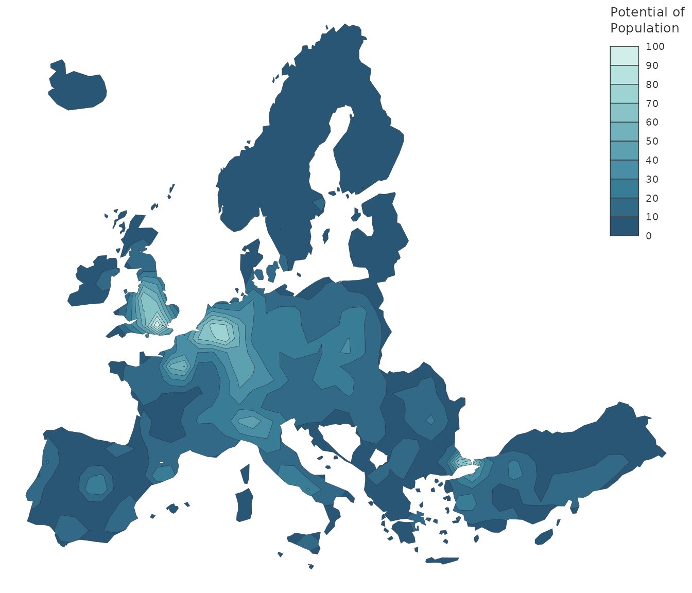

Modeling spatial interactions
Modeling spatial interactions is used to understand and quantify the level of interaction between different locations. It implies carrying out the three following steps:
- Conceptual formalization of entities (e.g. individuals, spatial units) and relationships (e.g. work, power, goods).
- Corresponent mathematical formalization: \(T_{ij} = S_i D_j / d_{ij}^2\) the trade flow between units i and j (\(T_{ij}\)) is proportional to the supply of unit i (\(S_i\)) and the demand of unit j (\(D_j\)) and inversely proportional to the squared distance between both units (\(d_{ij}^2\)).
- Informatic formalization of the model: language, algorithms, etc.
The most ancient and common spatial interactions model is of the gravity form. It has roots in the late 19st century and has been used in several fields (geography, economy, demography) to model a high variety of flows (commuting, trade, migrations). A brief presentation can be found in the Geography of transport systems. For a detailed one see, among many others, the book of Fotheringham and O’Kelly, Spatial Interaction Models: Formulations and Applications (Kluwer Academic Publishers, 1989).
A place-based model: Stewart’s potentials
There are two main ways of modeling spatial interactions: the first one focuses on links between places (flows), the second one focuses on places and their influence at a distance. Following the physics metaphor, the flow may be seen as the gravitational force between two masses, the place influence as the gravitational potential. The potential package, as its name suggests, proposes an implementation of the place-based model of potentials defined by Stewart.
The Stewart model is also known in the literature, depending on the discipline, as potential access, gravitational potential or gravitational accessibility. The concept was developped in the 1940s by physicist John Q. Stewart from an analogy to the gravity model. In his seminal work on the catchment areas of American universities, Stewart computes potentials of population. This potential is defined as a stock of population weighted by distance:
\[ A_i = \sum_{j=1}^n O_j f(d_{ij}) \]
The terms of this equation can be interpreted in a potential approach or an accessibility approach (in brackets):
- \(A_i\) is the potential at \(i\) (the accessibility)
- \(O_j\) is the stock of population at \(j\) (the number of opportunities)
- \(f(d_{ij})\) is a negative function of the distance between \(i\) and \(j\), mainly of the power or the exponential form.
The computation of potentials could be considered as a spatial interpolation method such as inverse distance weighted interpolation (IDW) or kernel density estimator. These models aim to estimate unknown values of non-observed points from known values given by measure points. Cartographically speaking, they are often used to get a continuous surface from a set of discrete points. However, we argue that the Stewart model is mainly a spatial interaction modeling approach, with a possible secondary use for spatial interpolation.
The distance friction
Modeling spatial interactions means quantifying the distance friction or impedance. The role of the distance can be interpreted as a disincentive to access desired destinations or opportunities (e.g. jobs, shops). At the very place of the opportunity, the interaction function equals 1, meaning that the potential access is 100%. Far away from the opportunity, the interaction function tends to 0, meaning that the potential access is 0 %. The span is defined as the value where the interaction function falls to 0.5 (50%). From the individuals’ point of vue, this function may be seen as a degree of availability of a given opportunity. From the opportunity’s point of vue (a store for example), the interaction function may be seen as a decreasing catchment area: there is a maximal attraction close to the opportunity and this attraction decreases progressively through distance.
Examples
The first example details the steps involved in the computation of a potential in one point (\(A_i\)). This example is based on a population dataset of administrative units of the French region of Occitanie. The stocks of population (\(O_j\)) are located on the centroids of the regions.

\(O_j\) and \(_i\)
The first step is to compute distance between the diamond and the population points.
\(d_{ij}\)
The principle of potential of population is based on the concept of the decay of the influence of points masses with distance. We will use a function to model this decay. In this example we will use an expoential function.
\(f(d_{ij})\)
The probability of interaction at the span value (75 km) is 0.5. As the distance increase the probability of interaction decrease.
We use the the values of interaction intensity for each distance between y and x points.

\(f(d_{ij})\)
The contribution of each x point to the total potential is equal to the probability of interaction multiplied by its mass.

\(O_j f(d_{ij})\)
It can be rendered cartographicaly in the following figure.

\(O_j f(d_{ij})\)
Finally, the value of the potential at y position is the sum of each point contribution:
4 + 9 + 478 + 57 + 13 + 59 + 322 + 305 + 157 + 85 + 479 + 4 + 34 = 2006.
This is how the potential values are computed for one point. A common practice is to compute potentials on points of a regular grid to esimate potentials on a pseudo-continue surface.
Create a regular grid
create_grid() is used to create a regular grid with the extent of an existing layer (x) and a specific resolution (res). The resolution is set in units of x (here, meters).
library(sf) library(potential) library(cartography) x <- n3_pt[substr(n3_pt$ID,1,3) %in% c( "FRJ"), ] x_poly <- n3_poly[substr(n3_poly$ID,1,3) %in% c( "FRJ"),] x$POP19 <- round(x$POP19 / 1000, 0) par(mar = c(0,0,0,0)) plot(st_geometry(x_poly), col= "grey80", border = "white", lwd = .4) propSymbolsLayer(x = x, var ="POP19", legend.pos = NA, col = "#940000", border = "white") y <- create_grid(x = x_poly, res = 10000) plot(st_geometry(y), pch = 23, add = TRUE, bg = "blue", cex = .5 )

Regular grid
Create a distance matrix
create_matrix() is used to compute distances between objects.
d <- create_matrix(x = x, y = y) d[1:5, 1:5] #> 1 2 3 4 5 #> 771 250197.4 240761.3 231373.0 222038.3 212764.2 #> 772 416715.4 407607.7 398543.5 389525.9 380558.1 #> 773 339761.5 330511.3 321306.5 312151.3 303050.0 #> 774 409959.0 401788.6 393703.5 385709.2 377811.3 #> 775 241710.1 231777.0 221849.9 211929.3 202016.3
The distance is expressed in map units (meters).
Compute the potentials
The potential function computes potentials.
y$pot <- potential(x = x, y = y, d = d, var = "POP19", fun = "e", span = 50000, beta = 2) plot(st_geometry(x_poly), col= "grey80", border = "white", lwd = .4) propSymbolsLayer(y, var = "pot", inches= .06, legend.style = "e", lwd = .5, legend.frame = TRUE, legend.pos = "topleft")
It’s possible to express the potential relatively to its maximum
y$pot2 <- 100 * y$pot / max(y$pot) plot(st_geometry(x_poly), col= "grey80", border = "white", lwd = .4) propSymbolsLayer(y, var = "pot2", inches= .06, legend.style = "e", lwd = .5, legend.frame = TRUE, legend.pos = "topleft")

It’s also possible to use equipotential areas with equipotential()
par(mar = c(0,0,0,0)) iso <- equipotential(x = y, var = "pot2", breaks = seq(0,100, 10), mask = x_poly) choroLayer(iso, var = "center", breaks = seq(0,100, 10), border = "white", lwd = .6, col = hcl.colors(10, "cividis"), legend.pos = "topleft")